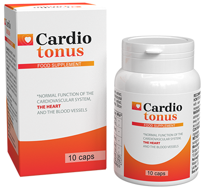

Ein deutscher Student in
den USA wurde als Wunderkind anerkannt und mit einem Stipendium ausgezeichnet, weil er einen
Weg zur Reinigung von Gefäßen entdeckt hat.
Josef Egger´s Idee ist ein neues Wort in der Behandlung von Bluthochdruck.
Schade ist nur, dass der Junge in Deutschland erst dann bekannt wurde, als er in New York
gewann. Zuvor hatte er bei unseren lokalen Behörden um Unterstützung gebeten und seine
Erfindung, die Tausende von Leben retten könnte, in der ganzen Bundesrepublik hinausposaunt,
aber niemand schenkte ihm Beachtung.
Josef sagt, dass das Geheimnis der Langlebigkeit in
den Blutgefäßen liegt. Wenn sie sauber und gesund sind, können Sie leicht 120 Jahre und sogar
mehr leben und sich völlig gesund fühlen.
Unserem Korrespondenten gelang es, ein junges Wunderkind zu interviewen. Josef
Egger erläuterte seine innovative Methode der Gefäßreinigung und Lebensverlängerung, für die
er ein Stipendium und weltweiten Ruhm erhielt.
Josef Egger wurde vom Bundespräsidenten persönlich zu seinem Stipendium aus den Vereinigten
Staaten beglückwünscht.
-Herr Egger, Sie haben wiederholt erklärt, dass saubere Gefäße die Grundlage der
Gesundheit sind. Warum glauben Sie das?
Es ist ganz einfach.Die
Arbeit aller inneren Organe und Systeme hängt von der Qualität der Blutversorgung ab.Schließlich
geht es bei der Blutversorgung um die Zufuhr von Sauerstoff und Nährstoffen und die Aufnahme von
Kohlendioxid und Stoffwechselprodukten zu den inneren Organen.In der Kindheit, Pubertät, Jugend
bewegen wir uns viel, unsere Blutgefäße sind neu, elastisch, sauber - die Versorgung aller
Organe ist maximal.Aber mit dem Alter bewegen wir uns immer weniger, und unsere Blutgefäße
beginnen zu veröden.Sie ist auf verschiedene Faktoren zurückzuführen - nicht nur auf schädliche
(wie Rauchen, schlechte Ernährung, Ökologie, sitzende Lebensweise), sondern auch auf ganz
natürliche (z.B.Ablagerung von Lipiden, die bei jedem Menschen vorkommt).
Und was sind kontaminierte
Gefäße? Stellen Sie sich Rohre vor, die mit Rost gefüllt sind. Was passiert daraufhin? Die Folge
ist ein erhöhter Wasserdruck und das Wasser selbst wird ungenießbar. Das Gleiche geschieht mit
den Gefäßen. Wenn sich Cholesterin oder andere Stoffe auf ihnen ablagern, steigt der Druck
(Verschmutzte Blutgefäße sind die Hauptursache für Bluthochdruck!), das Blut
selbst wird mit Verunreinigungen versehen, die Blutversorgung wird nicht so, wie sie sein
sollte. Infolgedessen leiden alle Organe und Systeme, die einen Menschen ausmachen. Schließlich
ist auch die Haut ein bestimmtes System.
Infolgedessen beginnt eine
Person zu altern. Wenn Sie regelmäßig Gefäße reinigen, können Sie bis zu 120 Jahre alt werden.
Damit einhergehend werden Sie keine Schmerzen haben - keine Organe und Ihr Gehirn wird richtig
arbeiten. Das heißt, durch die Reinigung der Blutgefäße können Sie Ihr Leben und Ihre Gesundheit
erheblich verlängern. Und das ist nicht nur eine Theorie. Früher habe ich es meinen Patienten
empfohlen und jetzt praktiziere ich es selbst. Menschen, die auf meinen Rat gehört haben, haben
lange überlebt.
So kommt es zu Gefäßverunreinigungen.Wenn Sie sie noch nie reinigen ließen und
über 40 Jahre alt sind, sind Ihre Blutgefäße stark verschmutzt.Bald wird es Ihre Gesundheit
beeinträchtigen, wenn es das nicht schon getan hat.
-Welche Art von Pathologien führt die vaskuläre Kontamination herbei?
Wie schon gesagt, es
betrifft den gesamten Organismus als Ganzes. Aber natürlich leiden in erster Linie die Organe
und Systeme, die direkt mit der Blutzirkulation verbunden sind - also das Herz-Kreislauf-System
selbst.
Gefäßverschmutzung
verursacht Krankheiten wie:
1. Atherosklerotische Gefäßerkrankung.Gefäße funktionieren überhaupt nicht
mehr: kleine Gefäße sind komplett verstopft und in großen finden sich große
Cholesterinablagerungen.
2. Ischämische Herzerkrankung. Es entsteht durch
einen regelmäßigen Blutmangel in den Herzkranzgefäßen, der sich wiederum vor dem Hintergrund
einer Gefäßverschmutzung entwickelt.
3. Schlaganfall.Bei anhaltender
Unterbrechung der Blutversorgung des Hirngewebes beginnen Nervenenden abzusterben, was zum
Verlust einiger Funktionen führt.
4. Hypertonie.Wenn das Lumen in den
Gefäßen aufgrund von Verschmutzung den Druck erhöht.
5. Krampfadern.Sie
treten nicht nur an den Beinen auf (was Frauen oft Sorgen bereitet), sondern auch im Inneren des
Körpers. Hämorrhoiden sind eine der Folgen von Krampfadern.
6. Venöse und arterielle
Thrombose.Bei längerer Verschmutzung in den Blutgefäßen kann sich ein Blutgerinnsel
bilden, das zum vollständigen Absterben des Gefäßes führt, was zum Absterben einzelner Zellen in
einem bestimmten Organ führen kann. Wenn das Gerinnsel abbricht und in die Blutbahn gelangt,
kann es zu einer Verstopfung der Blutgefäße im Herzen führen - das ist ein Herzinfarkt, der in
70 % der Fälle tödlich endet.
Um Ihnen eine Vorstellung
von den Gefahren verschmutzter Blutgefäße zu geben und wie verschmutzte Blutgefäße das Leben
verkürzen und die Gesundheit verschlechtern, möchte ich Ihnen einige Bilder zeigen.
Herz nach Myokardinfarkt
Schlaganfall bei einem 53 Jahre alten Mann. Ein Schlaganfall führt IMMER zu
einer Behinderung - Menschen können nicht mehr ohne Hilfe auskommen. Die Ursache ist eine
Verstopfung der Blutgefäße.
Krampfadern, unter denen viele Frauen leiden, sind auch eine direkte Folge
von verstopften Blutgefäßen.
Und das passiert überall! Herz-Kreislauf-Erkrankungen töten viermal mehr Menschen als alle
anderen Ursachen zusammen. Die Ärzte wissen darüber, sie wissen, dass es notwendig ist, die
Blutgefäße zu reinigen, aber aus irgendeinem Grund gibt es keine solche Praxis in der Medizin
von Deutschland. Viele Ärzte verschreiben Tabletten, um den Blutdruck zu senken. Aber sie heilen
nicht, sie geben nur eine vorübergehende Wirkung. Und es ist notwendig, die Blutgefäße zu
reinigen. Übrigens, in den westlichen Ländern tun dies alle Menschen über 35-40 Jahre alt seit
über einem halben Jahrhundert. Das heißt, über die Reinigung von Blutgefäßen gibt es alles
wissen. Warum sie es in unserem Land nicht haben - das ist für mich immer noch eine große Frage.
-Gibt es
irgendwelche Symptome, an denen man erkennen kann, ob die Blutgefäße kontaminiert sind?
Ja, natürlich. Zu den
Hauptsymptomen gehören:
- Migräne;
- Verschlechterung des Gedächtnisses;
- Chronische Müdigkeit;
- Schlaflosigkeit;
Probleme mit sexueller Aktivität;
- Verschlechterung des Seh- und Hörvermögens;
- Erhöhter Blutdruck;
- Kurzatmigkeit und Stenokardie;
- Blasse Haut an den Beinen;
- Muskel- und Gelenkschmerzen;
Aber auch wenn Sie diese Symptome nicht haben, sollte nach dem 30. Lebensjahr mindestens einmal alle
5 Jahre eine Gefäßreinigung durchgeführt werden. Die Gesundheit ist dann einfach bogatyr.
In der Tat verschmutzen die Blutgefäße sehr schnell, besonders bei älteren Menschen. Sie müssen
nicht den ganzen Tag lang Burger und Pommes frites essen. Der Verzehr einer Wurst oder eines Eies
reicht aus, um etwas Cholesterin in den Blutgefäßen abzulagern. Mit der Zeit sammeln sich die
Verunreinigungen an.
-Sie haben es geschafft, eine innovative Substanz zur Behandlung von Bluthochdruck und zur
Reinigung der Blutgefäße zu entdecken. Können Sie das näher erläutern, was ist die Innovation?
Fast alle modernen Medikamente gegen Bluthochdruck zielen darauf ab, das Angiotensin-konvertierende
Enzym im Blut zu reduzieren, was zu einer vorübergehenden Senkung des Drucks (und zur Erweiterung
der Blutgefäße) führt. Die Innovation besteht darin, dass die von mir erfundene Substanz
darauf abzielt, das endokrine System zu normalisieren, das dieses Enzym produziert.
Infolgedessen hilft es nicht nur, die Symptome des Bluthochdrucks vorübergehend zu beseitigen,
sondern auch die Ursachen für sein Auftreten zu beseitigen - mit anderen Worten, der Bluthochdruck
verschwindet vollständig. Die Substanz enthält spezielle Elemente, die zur Reinigung der Blutgefäße
beitragen und deren Wände stärken. Mit anderen Worten, es beseitigt die Hauptursache für
Bluthochdruck (Cholesterinablagerungen), sowie verhindert das Reißen der Blutgefäße und die
Entstehung von Herzinfarkten und Schlaganfällen.
Im Detail über eine neue Innovation des Wunderkindes Student an den Korrespondenten
unseres Programms hat sich bereit erklärt, die führenden Herzchirurgen des Landes, der Doktor
der medizinischen Wissenschaften, der Vorsitzende des Verwaltungsrates der JSC National
Scientific Cardiac Surgery Center, Stefan Knab zu erzählen

Stefan Knab erzählte, wie man den Druck ein für alle Mal reduzieren kann
Josef hatte eine großartige Idee, und wissenschaftliche Berater halfen, das Medikament herzustellen.
Eine große Anzahl von Spezialisten war beteiligt, so lieferte das Labor des Nationalen
Wissenschaftlichen Herzchirurgischen Zentrums die Basis für die Experimente. Das in unserem Labor
hergestellte Medikament ist bereits fertig und zeigt unglaubliche Ergebnisse
Die Lösung scheint einfach. Die Beeinflussung des endokrinen Systems ist jedoch nicht so einfach. Die Substanz, die in der Lage ist, die Produktion des Angiotensin-konvertierenden Enzyms zu normalisieren, wurde von dem ukrainischen Studenten Nikita Suvorov entdeckt. Die ganze Zeit über haben wir ein Medikament auf dieser Basis entwickelt. Diese Substanz ist bisher nur in . zu finden

ist ein sehr gutes Mittel, das bei regelmäßiger Einnahme in 1-2 Wochen
auch stark verschmutzte Blutgefäße reinigen kann.
Ich möchte auch darauf hinweisen, dass dieses Medikament keine Chemie enthält, sondern nur stark
konzentrierte Extrakte aus Pflanzen, die für die Reinigung der Blutgefäße nützlich sind, also ist es
nicht nur nicht schädlich für den Körper, sondern auch sehr nützlich.
Es gibt eine offizielle Statistik auf der Website des National Scientific Cardiovascular Cleansing
Center, die aus einer klinischen Studie abgeleitet wurde. Insgesamt nahmen etwa 2.000 Patienten an
der Studie teil. Sie waren alle im Kurs.
1. Normalisierung des Blutdrucks innerhalb von 1-2 Tagen nach der Einnahme des
Medikaments - 99 % der untersuchten Personen.
2. Normalisierung der Herzfrequenz im Verlauf - 97% der
Studienteilnehmer.
3. Vollständige vaskuläre Cholesterin-Clearance pro Kurs - 99% der
Studienteilnehmer.
4. Erhöhte Effektivität der Behandlung von chronischen Krankheiten - 99 % der
Untersuchten.
5. Verbesserung des allgemeinen Gesundheitszustandes - 100% der
Studienteilnehmer.
6. Keine Nebenwirkungen durch die Einnahme des Medikaments - 100% der
Studienteilnehmer.
-Wie viel kostet es , und
wo kann man es kaufen?
ist ein sehr günstiges Medikament, besonders jetzt zu
(einschließlich) WIRD VERTRIEBEN
.
Das Medikament ist ein Grundnahrungsmittel im bundesweiten, staatlich geförderten Hypertonieprogramm. Im Rahmen dieses Programms kann jeder dieses Medikament für erhalten
Erfahren Sie mehr darüber, wie Sie mit Lieferung im ganzen Land
erhalten können
Um zu erhalten, benötigt man:
1. Ein ausgefülltes Antragsformular auf dem offiziellen Online-Apotheke Nr.
1 mit Name und Telefonnummer
2. der Betreiber ruft unter der angegebenen Nummer zurück, um Ihre
Lieferadresse zu überprüfen
3. das Paket per Kurier oder in der Postfiliale erhalten. Die Lieferung
dauert von 3 bis 7 Tage in jedes Bundesland Deutschlands.
Um die Reinheit der Gefäße zu erhalten, empfehle ich, alle 1-2 Jahre einen Reinigungskurs zu machen. Dies ist besonders wichtig für Menschen im Alter. In diesem Fall können Sie Ihre Gesundheit wesentlich stärken und das Auftreten von Alterserscheinungen verzögern. Saubere Gefäße garantieren eine gute Gesundheit.
-Danke, Josef und Stefan, für ein so ausführliches Interview.
Kommentare zum Artikel

Xenia
Dahlke/Lübeck
Danke an Josefs Eltern!
Genial. Sehr interessant. Ich habe es bestellt. Konnte es bis zum Schluss nicht glauben für

Christian
Kultur/Solingen
Ich gehöre zu denjenigen,
die bereits bestellt haben und es ausprobieren konnten. Ich leide seit 7 Jahren an
Bluthochdruck. Ich kann mich nicht erinnern, dass mein Blutdruck normal war. Dem Rat meines
Arztes folgend, beschloss ich, meine Blutgefäße zu reinigen. Nach einem Monat der Einnahme von
hat sich mein Blutdruck normalisiert! Jetzt lebe ich seit etwa 2 Monaten ohne
Bluthochdruck. Es ist ein völlig anderes Leben. Ich begann mich viel besser zu fühlen. Ich
empfehle dieses wunderbare Mittel jedem - besonders zu diesem Preis

Anja Hocke /
Trier
Danke. Ausgecheckt. Bequem,
dass die Lieferung per Post - kann überall im Land zu bringen.

Fabian
Bortfeldt / Dortmund
Unsere Kinder sind die
klügsten! Gute Arbeit Nikita! Ich habe auch die Erfahrung mit gemacht - der
Bluthochdruck ist weg.
Ulrieke Voges /
Haale (Saale)
Nikita hat sich gut
geschlagen, ebenso wie seine Eltern. Ich wurde letzten Monat mit behandelt. Mein
Blutdruck stieg gelegentlich an. Ich habe es etwa 2-2,5 Wochen lang genommen. Der Blutdruck
steigt nicht mehr. Ich fühle mich wie ein völlig gesunder Mensch.

Reinhard Forst
/ Dresden
Ich mache die Gefäßreinigung
seit genau 5 Jahren. Es hilft, stark und gesund zu bleiben. Ich habe keinen einzigen wunden
Punkt, während viele meiner Altersgenossen schon lange im Grab liegen. Ich habe sogar noch Sex,
sorry für die Details. Sie müssen Ihre Gefäße reinigen lassen!

Kira Dodel /
Offenbach am Main
Das Medikament ist
ausgezeichnet. Das kann ich voll und ganz bestätigen! Ich hatte einen konstanten Druck von 140
auf 90. Ich benutze es schon seit einigen Jahren. Nach der Einnahme dieses Medikaments lag mein
Blutdruck bei 125 zu 85. Meine Gesundheit hat sich um ein Vielfaches verbessert.

Nina
Patsueva/Neuss
Behandelt Bluthochdruck mit
diesem Medikament. Bluthochdruck ist schon seit langem mein Lebensbegleiter. Mit der Zeit kamen
Diabetes und Nierenprobleme hinzu. Ich hatte ein sehr schlechtes Gedächtnis und Sehvermögen.
Während meines ganzen Lebens habe ich mich auf jede erdenkliche Weise behandelt. Nichts hat
wirklich geholfen. Ich entschied mich, auszuprobieren. Es war mein erstes Mal, dass
ich Medikamente über das Internet gekauft habe, aber es war wirklich einfach.

Philipp Kehl /
Münster
Danke! Ich habe kürzlich im
Fernsehen eine Sendung über diesen Jungen und seine Medikamente gesehen. Viele Ärzte haben ihn
dort gelobt.
Nina Kraus/
Pforzheim
Ich nehme es schon seit
einem Monat (mit Unterbrechungen). Mein Blutdruck ist jetzt normal, und ich fühle mich jetzt
viel besser. Danke, Nikita!
Carina
Wandt / Reutlingen
Lesen Sie mehr über das
Medikament. Ich bin wirklich beeindruckt!
Evelyn
Zörner / Osnabrück
Ehrlich, das ist schon
was! Ich habe es sofort bestellt, als ich von unserem kleinen Wunderkind und dem
Bonusprogramm gehört habe. Es kam in 3 Tagen (in Kiew). Wie es kam sofort wurde ein Getränk.
spürbare Verbesserung der Gesundheit am selben Abend bemerkt. Der Druck war normal. Und
normal nicht für mich als Hypertoniker. Und normal für den Durchschnittsmenschen. Mein
Zustand nach der Einnahme ist wunderbar. Ich habe Kraft. Ich habe besser geschlafen, abends
war ich einfach ein gesunder Mensch. Die beste Medizin von allen
JOURNAL

Wir sind in sozialen Netzwerken